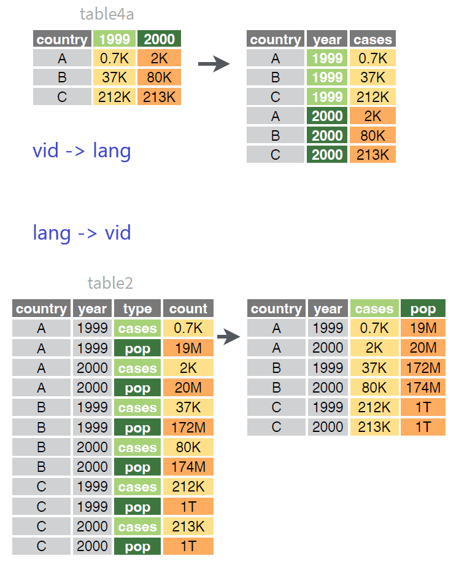

Har vi prata om tidy data før? Hvis ikke er tida nå.
7.1 Tidy data
En grundigere introduksjon finnes hos Tidyverse. Faktisk er det en mye bedre introduksjon enn det jeg hadde greid å skrive. Hvis du er interessert i hvorfor jeg hele tida maser på tidy data, og prinsippene bak det, sjekk ut lenka! Hvis du tar orda mine for gode fisker kan du nøye deg med denne definisjon av tidy data:
Hver kolonne er en variabel.
Hver rad er en observasjon.
Hver celle er én verdi.
(Min oversettelse, fra lenka over.)
Sjøl om du ikke har hørt om tidy data før har du sikkert vært bort forskjellen på lange og vide formater i dag. Kanskje du ikke er vant med å bruke de orda om det, men du har nok vært borti behovet for å omstrukturere et datasett. Noen eksempler kan hjelpe til:
# Genererer et datasett for illustrasjonprognose <-tibble(plansone =rep(seq(5001001, 5001004), each =2),kjonn =rep(c("M", "K"), 4),aar2023 =round(runif(8, 400, 800)),aar2024 =round(runif(8, 400, 800)),aar2025 =round(runif(8, 400, 800)),)prognose
# A tibble: 8 × 5
plansone kjonn aar2023 aar2024 aar2025
<int> <chr> <dbl> <dbl> <dbl>
1 5001001 M 750 506 590
2 5001001 K 556 552 783
3 5001002 M 781 662 575
4 5001002 K 643 685 633
5 5001003 M 798 490 477
6 5001003 K 496 514 560
7 5001004 M 632 731 648
8 5001004 K 758 657 539
Her har vi et datasett med fire plansoner, to kjønn, og tre variabler som viser forventa folkemengde fra 2023 til 2025. Vi kan se på de tre punktene og vurdere om dette er tidy data.
Er hver kolonne en variabel? Plansone og kjønn ja. Årsvariabelene: kanskje? Det er forventa befolkning per år.
Er hver rad en observasjon? Nei. Hver rad er tre observasjoner: en for hvert år.
Dermed vil vi gjøre om dette til et tidy format. Dette gjør vi ved å gå fra bredt til langt format. For å gjøre dette tar vi i bruk funksjoner fra tidyverse1.
7.2 Fra vid til lang
La oss kikke på det å gå mellom lange og vide formater. Dette kan være vanskelig å se for seg. Jeg setter alltid pris på å ha noe visuelt å lene meg på. Her er en god illustrasjon fra Posits tidyr-jukselapp:

Fra bredt til langt og fra langt til bredt — CC BY SA Posit Software
En pivot: Vi velger de tre årskolonnene og sender navna deres til en ny variabel og verdiene deres til en annen. Disse navngir vi ved en streng. Slik kan det set ut
# A tibble: 24 × 4
plansone kjonn aar befolkning
<int> <chr> <chr> <dbl>
1 5001001 M aar2023 750
2 5001001 M aar2024 506
3 5001001 M aar2025 590
4 5001001 K aar2023 556
5 5001001 K aar2024 552
6 5001001 K aar2025 783
7 5001002 M aar2023 781
8 5001002 M aar2024 662
9 5001002 M aar2025 575
10 5001002 K aar2023 643
# … with 14 more rows
Nå er datasettet tidy: hver rad representerer bare én observasjon. Vi oppnådde dette ved å gå fra vidt til langt format. Når det er sagt, har vi en del vi kunne ha utsatt på datasettet. Vi kan bruke det som eksempel på hvordan vi arbeider iterativt, ved å bygge videre på det vi starter med. Det jeg ikke liker med koden vår over er:
Årsvariabelen er en strengvariabel, fordi den fikk med seg bokstavene “aar” fra kolonnenavnet. Siden år er et tall (strengt tatt dato, men det er ikke viktig her), bør den være numerisk. Da kan vi seinere summere den opp lettere, samt at vi ikke trenger være redd for at sorteringa blir rar.
Jeg gjentar meg sjøl alt for mye i denne kodeblokken. Legg merke til at jeg skriver cols = c(aar2023, aar2024, aar2025). Her kunne jeg spart fingra mine en del, siden det er et repetativt mønster. Okei, kanskje ikke så mye innsparing her, men hvis vi hadde hatt tredve årskolonner ville det begynt å bety noe.
Vi løser nr 1. ved å ta i bruk noen nyttige funksjoner som tidyr-gjengen har lagt inn i pivot()-funksjonene. Og nr. 2 ved hjelp av tidyselect.
# A tibble: 24 × 4
plansone kjonn aar befolkning
<int> <chr> <dbl> <dbl>
1 5001001 M 2023 750
2 5001001 M 2024 506
3 5001001 M 2025 590
4 5001001 K 2023 556
5 5001001 K 2024 552
6 5001001 K 2025 783
7 5001002 M 2023 781
8 5001002 M 2024 662
9 5001002 M 2025 575
10 5001002 K 2023 643
# … with 14 more rows
Hva gjorde vi her? Vi brukte contains() i utvelginga av kolonner for å treffe alle kolonner som inneholdt en viss tekststreng, her “aar”. Vi fikk fjerna tekststrengen “aar” fra kolonnas elementer ved å si fra til pivot_longer() at alle kolonnene vi valgte ut hadde dette prefikset. Til dette brukte vi names_prefix = "aar". Så gjorde vi om denne kolonna til numerisk ved å legge på en transformasjon via den enkle as.numeric()-funksjonen. Dette gjorde vi ved names_transform = as.numeric.
7.3 Fra lang til vid
Sjøl om vi elsker tidy data hender det vi må besudle oss med vide, rotete data. For eksempel hvis vi har Excel-filer som forventer data på et visst format. Kanskje de vil ha år bortover. Så det er greit at vi veit åssen vi går fra lang til vid. Prosessen er stort sett bare det motsatte av hva vi gjorde med pivot_longer(), og det minner meg om dette sitatet fra Welcome to Nightvale:
And now for a brief public service announcement: Alligators. Can they kill your children? Yes. Along those lines, to get personal for a moment, I think the best way to die would be: swallowed by a giant snake. Going feet first and whole into a slimy maw would give your life perfect symmetry.
# A tibble: 8 × 5
plansone kjonn aar2023 aar2024 aar2025
<int> <chr> <dbl> <dbl> <dbl>
1 5001001 M 750 506 590
2 5001001 K 556 552 783
3 5001002 M 781 662 575
4 5001002 K 643 685 633
5 5001003 M 798 490 477
6 5001003 K 496 514 560
7 5001004 M 632 731 648
8 5001004 K 758 657 539
Jeg skumpa borti dette tidligere da vi prata om versjonering: framtidige versjoner av en pakke kan fjerne funksjoner du er avhengig av. Jeg opplevde dette nettopp med omforming av data slik vi gjør her. Omstruktureringsfunksjonene kommer fra tidyr. Da jeg lærte temaet var den siste versjonen 0.8.3. Ifølge tidyr()sendringslogg blei den sluppet i mars 2019. Neste versjon var 1.0.0, og kom i september 2019. Som du kan gjette av versjonshoppet var dette en stor endring. Bort med de gamle funksjonene spread() og gather(), inn med de nye pivot_wider() og pivot_longer().
Umiddelbart var dette noe ergelig, fordi mine gamle skript ikke lengre funka. Hadde jeg vært noe mer teknisk kompetent hadde jeg funnet en måte å putte R-versjoner og skript i ulike kontainere slik at jeg kunne ha kjørt mine gamle skript under gamle R- og pakke-versjoner. Istedenfor bare oppdaterte jeg skripta mine til å passe de nye funksjonene. Så lærte jeg meg også hvordan de funka.*
Der og da kan det være irriterende at funksjonalitet du er vant med forsvinner og du blir tvunget til å lære noe nytt. Men nå syns jeg denne endringa var til det bedre. Jeg greide aldri å intuisere hva som var var av gather() og spread().
*: En fotnote i en fotnote, går det an? Definitivt, ifølge Sir Terry Pratchett. Uansett: jeg hadde ikke en gang trengt å gjøre endringer. Når en funksjon forsvinner fra en pakke i tidyverse tar det lang tid før den er helt borte. De eksisterer en stund som deprecated eller superseded, hvilket indikerer for brukere at denne funksjonen etter hvert vil forsvinne i nye pakkeversjoner. Slik at de har tid å omstille seg. For mer om dette, se lifecycle.↩︎